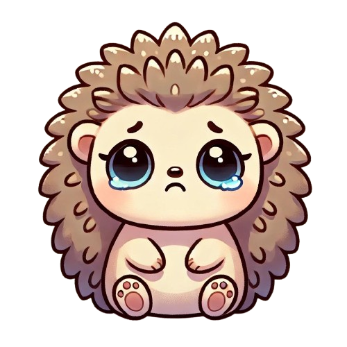
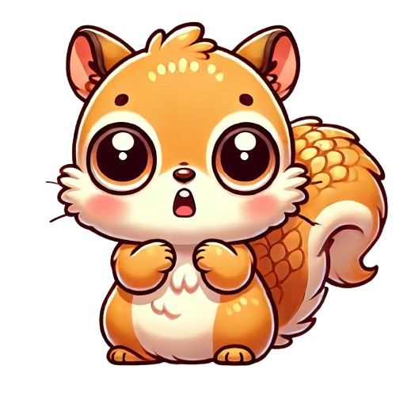

Tervetuloa tunnetaitopelien pariin!
Täällä pääset tutustumaan erilaisiin tunteisiin ja opettelemaan, miten niitä voi käsitellä. Tunteiden ymmärtäminen on tärkeää, koska se auttaa meitä tuntemaan iloa, olemaan ystävällisiä ja toimimaan hyvin yhdessä muiden kanssa. Tunteet myös kertovat meille, mitkä asiat ovat meille tärkeitä. Jokaisella tunteella on oma pelinsä, jossa opit uusia asioita hauskalla tavalla.
Tässä voit tutustua sivuilla oleviin pelihahmoihin:

Ilo

Suru

Hämmennys

Viha

Inho

Pelko